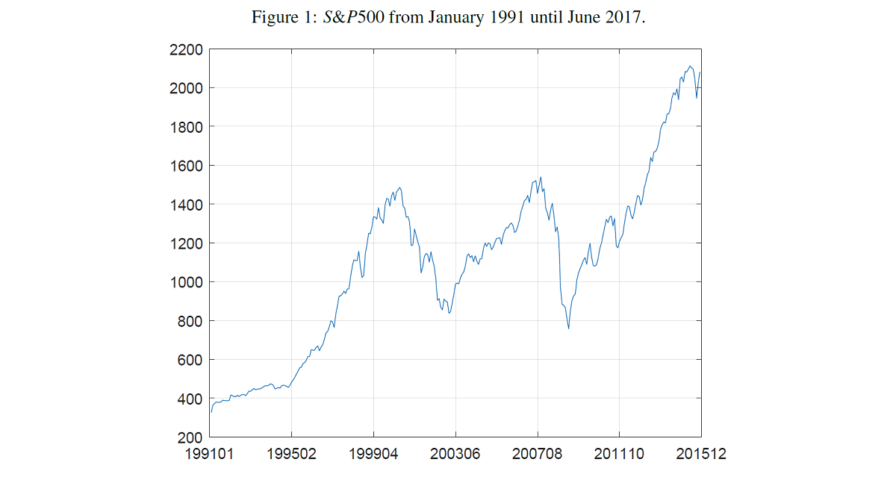
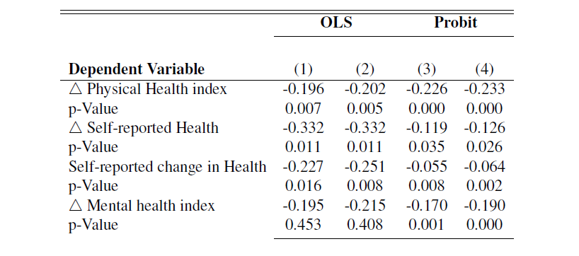

The Effects of Wealth Shocks on Health
This project focuses on the effects of wealth shocks on health status among older U.S. retirees, based on the statistical analysis of [Schwandt, H. (2018). Wealth shocks and health outcomes: evidence from stock market fluctuations. American Economic Journal: Applied Economics, 10(4), 349-77]. This is a replication of the original work, using the same dataset but a different programming language. More specifically, the original work was done in Stata, while this project, available on Github (see the link below), is done in Matlab.
 The dataset used is from the Health and Retirement Study (HRS), conducted by the University of Michigan's Institute for Social Research. The HRS is a biennial longitudinal study that surveys a sample of about 20,000 elderly households in the United States. Panel data include information on wealth, mental and physical health, mortality, as well as demographic information. The wealth shocks are a construct based on S&P500 movements, see left for the period under consideration.
 My replication arrives at very similar results to Schwandt (2018), although I made slightly stricter assumptions about wealth shocks to keep closer to reality. If you are interested in learning more about this, click the "Seminar Paper" button at the bottom of this page. The table on the right shows the main results, keeping in mind that the dependent variable is always defined as the change in measures from one reporting period to the next. The results show that wealth shocks based on stock market changes have a significant impact on the health measures captured by the HRS, such as the physical health index, self-reported health, self-reported change in health, and the mental health index. The latter is intuitive, as one would expect significant wealth losses to have an impact on mental health. In contrast, the significant effects on the physical health measures is surprising.
Beyond the results of the original study, I examined two opposing effects in more detail. On the one hand, people of advanced age are closer to the borderline of severe disease, so wealth shocks are more likely to have an observable effect. On the other hand, one would expect that an older respondent would tend to invest in less risky stocks and have fewer years to cover with his or her assets compared to a younger respondent. In this regard, I find suggestive evidence that the latter effect is stronger and that the health of retirees under the age of 76 is affected more negatively after a stock market-related wealth shock. If you are interested in this contribution to the literature, the corresponding analysis can be found on the Github repository below.